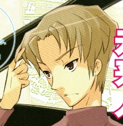

SOS Brigade (SOS 団) Other Characters
Adult Mikuru Asahina
Adult Mikuru Asahina appeared in episode 10: The Melancholy of Haruhi Suzumiya IV. She is, naturally, the adult version of the current Mikuru Asahina and had also travelled back from the future. Kyon was skeptical at first about her identity, but she revealed to him the star shaped mole above her left breast as proof. She came back to warn Kyon of an important event that will occur to himself and Haruhi in the near future, but she could not offer details because it may alter history significantly for the future. Adult Mikuru has a mature charm about her, yet still retains some of young Mikuru’s traits such as panicking when embarassed.
Alternate Haruhi Suzumiya
This long haired version of Haruhi appears The Disappearance of Haruhi Suzumiya story arc. In this alternate version of events, Haruhi does not attend North High with Kyon and instead goes to Kouyouen High School with Itsuki Koizumi. She is the focus of The Disappearance of Haruhi Suzumiya movie.
Young Haruhi Suzumiya
This version of Haruhi first appears in Bamboo Leaf Rhapsody when Kyon travels back in time with Mikuru. Kyon encounters young Haruhi (who at the time is in 8th grade) as she trespasses into East Junior High School at night. Although Kyon does not reveal his name, his interactions with young Haruhi that night is what persuades her to attend the school in the future. The events of that night are also the focus of The Disappearance of Haruhi Suzumiya.
Sasaki

Sasaki first appears in Volume 9: The Dissociation of Haruhi Suzumiya. She is a close friend of Kyon’s from middle school, but went to a different high school. Many of Kyon’s middle school friends, including Kunikida and Nakagawa, had the impression that Kyon and Sasaki were boyfriend and girlfriend, but they simply became good friends after attending the same cram school courses in middle school . Nevertheless, Sasaki’s relationship with Kyon still evokes jealousy in Haruhi. Like Haruhi, Sasaki also has some atypical characteristics; she is prone to odd philosophical musings and behaviors, and is believed to manifest similar powers as Haruhi such as creating a distinctly different type of Closed Space. Like Haruhi, Sasaki has attracted the attention of a rival Agency similar to Koizumi’s, and humanoid interface beings similar to Yuki but created by the ‘Canopy Dominion’.
Kuyo Suo

Kuyo Suo is a humanoid interface similar to Yuki Nagato, but was created by the ‘Canopy Dominion’ rather than the Integrated Data Entity. She appears as a young girl wearing a black dress and with extremely long black hair, yet despite her distinct appearance, most people do not notice her presence due to her data manipulation abilities. She appears to be extremely uncommunicative, speaking rarely if ever at all. Her purpose on Earth remains unclear, although it is apparent that her patrons have an interest in the events unfolding around and the people surrounding Haruhi, Kyon and Sasaki.
Kyoko Tachibana
Kyoko is a member of an organization of espers that is a rival to the Agency Itsuki Koizumi belongs to. Where Koizumi’s group recognized Haruhi as the source of their abilities, Kyoko’s group was certain that Kyon’s school friend Sasaki was the source of theirs. Kyoko’s group also believes that the powers wielded by Haruhi rightfully belongs to Sasaki and that they should be transferred back to her somehow. As such Kyoko’s group and Itsuki’s group are engaged in a conflict of
Fujiwara
Fujiwara, like Mikuru, is also a time traveller but is from a faction in the future that believes time travel should never have existed. Prior to knowing his name, Kyon referred to him as “Sneering Bastard” due to the constant sneer he often wears on his face and how he complains that everything is a waste of time. Kyon has also described Fujiwara as an evil version of Koizumi. Later on in the series, Fujiwara joins forces with Kyoko Tachibana and Kuyou Suou to support the Sasaki faction.